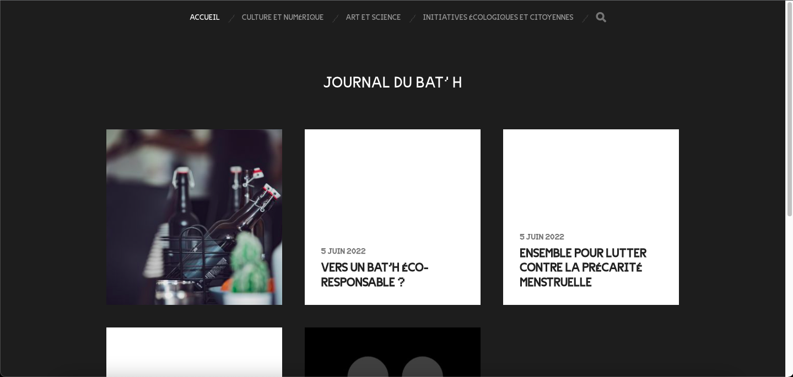

1

Site newspaper bat'H
Content management

Develop
for web and digital media
1
Site newspaper bat'H
Content management
the stages of beer production
Multimedia writing and storytelling
To explain the steps of beer making, we made animations. I made several elements in vector on Illustrator. I also participated in the creation of the first animation. On this subject, I did not acquire all the skills that I hope to develop in the future. My classmate helped me a lot by explaining me the steps. On the other hand, I fully integrated the animations in the website and I also realized all the paths in the animations to link them together.
I want to see2

3
WEBSITE ISIS
Web development
Hosting
I entirely designed and developed the ISIS website. The site was realized in order to popularize the beer. We can thus find 2 pages, realized with students of the Biological Engineering course, a page with animations where we detail the stages of the manufacture of beer and a page where we show the climatic impact of beer. Thanks to its design, I also tried to show the impact that women had on the making of beer. We can also find a shop.
I want to see
lena brincat's portfolio
Web Development
In order to be of service but especially to improve my skills in HTML
and CSS, I offered to develop the portfolio of a friend.
As soon as the design was sent to me, I developed the portfolio in one
week in parallel to my classes.
4
5
kilian brun’s portfolio
Web Development
As for the other portfolio, I also developed this site for a student
of HETIC in order to improve my skills and my speed.
The design was also made by the student, I, after receiving the
models, realized this site in three days.